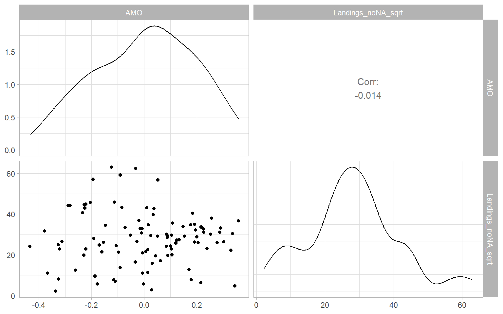

9 Time Series Regression with Correlated Errors
The goal of this lecture is to bring together knowledge about regression, time series trends, and autocorrelation with the goal of obtaining correct inference in regression problems involving time series. You should become capable of suggesting a model that would meet the goal of data analysis (testing certain relationships) while satisfying assumptions (e.g., uncorrelatedness of residuals) and minimizing the risk of spurious results.
Objectives
- Model autocorrelated residuals (in other words, incorporate or account for autocorrelation) so the final residuals satisfy modeling assumptions.
- Apply and interpret Granger causality that is based on time series predictability.
Reading materials
- Chapters 3.8, 5.5, and 5.6 in Shumway and Stoffer (2017)
- Chapter 3 in Kirchgässner and Wolters (2007) on Granger causality
9.1 Introduction
Here we explore a regression model with autocorrelated residuals. We already know how to
- forecast, construct prediction intervals, and test hypotheses about regression coefficients when the residuals satisfy the ordinary least squares (OLS) assumptions, i.e., the residuals are white noise and have a joint normal distribution \(N(0, \sigma^{2})\);
- model serial dependence (i.e., autocorrelation) in stationary univariate time series, such as using ARMA models.
Here we bring these two skills together.
If the residuals do not satisfy the independence assumption, we can sometimes describe them in terms of a specific correlation model involving one or more new parameters and some ‘new residuals.’ These new residuals essentially satisfy the OLS assumptions and can replace the original correlated residuals (which we will sometimes call the ‘old’ residuals) in the model.
When modeling time series, we often want to find so-called leading indicators, i.e., exogenous variables whose lagged values can be used for predicting the response, so for the forecasts we do not need to predict \(X\)-variables that are employed in a model. Hence, our models may include lagged versions of both the response and predictor variables (a general form of such a model was given in Equation 2.2).
9.2 Linear regression with ARMA errors
We begin with the simplest case, a constant mean model, where the residuals are serially correlated and follow an AR(1) model, that is \[ Y_{t} = \beta_{0} + \epsilon_{t}, \tag{9.1}\] where \(\epsilon_{t} \sim\) AR(1), i.e., \[ \epsilon_{t} = \phi \epsilon_{t - 1} + a_{t}. \tag{9.2}\]
Here \(\phi\) is a real number satisfying \(0 < |\phi| < 1\); \(a_{t}\) is white noise with zero mean and the variance \(\nu^{2}\), i.e., \(a_{t} \sim \mathrm{WN}(0,\nu^2)\). We also assume that \(\mathrm{cov}(a_{t}, \epsilon_{s}) = 0\) for all \(s < t\) (i.e., that the residuals \(\epsilon_s\) are not correlated with the future white noise \(a_t\)).
Equation 9.2 allows us to express Equation 9.1 as \[ Y_{t} = \beta_{0} + \phi \epsilon_{t - 1} + a_{t}. \tag{9.3}\]
The advantage of this representation is that the new residuals \(a_{t}\) satisfy the OLS assumptions. In particular, since \(a_{t}\) is white noise, \(a_{t}\) is homoskedastic and uncorrelated.
We shall also assume that \(a_{t}\) are normally distributed (for justification of the construction of confidence intervals and prediction intervals). However, even if \(a_{t}\) are not normal, \(a_{t}\) are uncorrelated, which is a big improvement over the serially correlated \(\epsilon_{t}\).
Our goal is to remove the \(\epsilon_{t}\) entirely from the constant mean model and replace them with \(a_{t}\) acting as new residuals. This can be done as follows. First, write Equation 9.1 for \(t-1\) and multiply both sides by \(\phi\), \[ \phi Y_{t -1} = \phi \beta_{0} + \phi \epsilon_{t - 1}. \tag{9.4}\]
Taking the difference (Equation 9.3 minus Equation 9.4) eliminates \(\epsilon_{t}\) from the model: \[ \begin{split} Y_{t} - \phi Y_{t - 1} &= \left( \beta_{0} + \phi \epsilon_{t - 1} + a_{t} \right) - \left( \phi \beta_{0} + \phi \epsilon_{t - 1} \right) \\ &= (1 - \phi) \beta_{0} + a_{t}. \end{split} \]
Therefore we can rewrite the constant mean model in Equation 9.1 as \[ Y_{t} = (1 - \phi) \beta_{0} + \phi Y_{t - 1} + a_{t}. \tag{9.5}\]
In general, for any multiple linear regression \[ Y_{t} = \beta_{0} + \sum^{k}_{j =1} \beta_{j} X_{t,j} + \epsilon_{t}, ~~ \text{where} ~~ \epsilon_{t} \sim \mbox{AR(1)}, \tag{9.6}\] we can perform a similar procedure of eliminating \(\epsilon_{t}\).
This elimination procedure leads to the alternate expression \[ Y_{t} = (1 - \phi) \beta_{0} + \phi Y_{t -1} + \sum^{k}_{j = 1} \beta_{j} (X_{t,j} - \phi X_{t-1, j}) + a_{t}, \tag{9.7}\] where \(a_{t}\) is white noise, i.e., homoskedastic with constant (zero) mean and uncorrelated. See Appendix B describing the method of generalized least squares and an example of \(k=1\).
Note that rewriting the model in this way pulls the autocorrelation parameter for the old residuals, \(\phi\), into the regression part of the model. Thus there are now \(k + 2\) unknown regression parameters (\(\beta_{0}, \beta_{1}, \dots, \beta_{k}\), and \(\phi\)). The introduction of an additional parameter into the regression part of the model can be regarded as the price to be paid for extracting new residuals \(a_{t}\) that satisfy the OLS assumptions.
Note that the new residuals \(a_{t}\) have smaller variance than the \(\epsilon_{t}\). In fact, \[ \begin{split} \sigma^{2} & = \mbox{var} (\epsilon_{t} ) = \mbox{var} (\phi \epsilon_{t - 1} + a_{t}) \\ \\ & = \phi^{2} \mbox{var}(\epsilon_{t - 1}) + \mbox{var} (a_{t} ) ~~~ \mbox{since} ~~ \mbox{cov}(a_{t}, \epsilon_{t - 1}) = 0\\ \\ & = \phi^{2}\sigma^{2} + \nu^{2}, \end{split} \] leading to the relation \[ \nu^{2} = \sigma^{2} (1 - \phi^{2} ). \tag{9.8}\]
However, comparing Equation 9.5 with Equation 9.5, and Equation 9.7 with Equation 9.6, we see that the rewritten form of the model is not linear in terms of the parameters \(\beta_{0}, \beta_{1}, \dots, \beta_{k}\) and \(\phi\). For example, the intercept term \((1 - \phi) \beta_{0}\) involves a product of two of the parameters. This nonlinearity makes the OLS, implemented in the R functions lm() and lsfit(), a poor method for obtaining parameter estimates. Instead, we will use the method of maximum likelihood (ML) carried out through such R functions as arima().
The function arima() allows us to input the model in its original form, as in Equation 9.6. It then internally rewrites the model to put it in the form of Equation 9.7. (So we do not have to rewrite the model!) It then makes the assumption that the \(a_t\) are normal and constructs the multivariate normal likelihood function \[
L (Y_{1} , \dots , Y_{n}; Q ),
\] where \(n\) is the sample size and \(Q\) is the vector of all unknown parameters. In general, for an AR(1) model with \(k\) original predictors, we have \(Q = (\phi, \beta_{0}, \beta_{1}, \dots, \beta_{k}, \nu^{2})\). Recall that \(\nu^{2} = \mathrm{var}(a_{t}) = \mathrm{cov}(a_{t} , a_{t})\).
The function arima() then uses the historical data \(Y_{1}, \dots, Y_{n}\) to find the parameter estimates \[
\hat{Q} = \left( \hat{\phi}, \hat{\beta}_{0} , \hat{\beta}_{1} , \dots, \hat{\beta}_{k} , \hat{\nu}^2 \right),
\] which maximize the likelihood \(L\). These estimates (and other things, such as the standard errors of the estimates) can be saved to an output object in R. We will use an example to illustrate the use and interpretation of the function arima().
Moreover, we can extend the regression model in Equation 9.6 with AR(1) errors to a model with a more general form of errors, ARMA, by assuming \(\epsilon_t \sim \text{ARMA}(p,q)\) (see Chapter 6.6 in Brockwell and Davis 2002 and https://robjhyndman.com/hyndsight/arimax/): \[
\begin{split}
Y_t &= \sum^{k}_{j =1} \beta_{j} X_{t,j} + \epsilon_{t},\\
\epsilon_{t} &= \phi_1 \epsilon_{t-1} + \dots + \phi_p \epsilon_{t-p} + \theta_1 a_{t-1} + \dots + \theta_q a_{t-q} + a_t.
\end{split}
\tag{9.9}\] This model in Equation 9.9 can be specified in R functions arima(), fable::ARIMA(), forecast::Arima(), and forecast::auto.arima().
The R package forecast has been superseded by the new package fable that uses an alternate parameterization of constants, see ?fable::ARIMA.
Remember that the variables \(Y_t\) and \(X_{t,j}\) (\(j = 1,\dots,k\)) should be detrended prior to the analysis (to avoid spurious regression results, see the previous lecture on dealing with trends in regression). If differencing is chosen as the method of detrending, the orders of differences \(d\) and \(D\) can be specified directly within the mentioned ARIMA functions (so R will do the differencing for us).
9.3 ARIMAX models
ARIMAX (‘X’ stands for ‘external regressor’) models are closely related to Equation 9.9, but there is an important difference. For simplicity of notation, we can present an ARMAX(\(p,q\)) model that is a regular ARMA(\(p,q\)) model for \(Y_t\) plus the external regressors: \[
\begin{split}
Y_t &= \phi_1 Y_{t-1} + \dots + \phi_p Y_{t-p} + \theta_1 a_{t-1} + \dots + \theta_q a_{t-q} + a_t\\
&+\sum^{k}_{j =1} \beta_{j} X_{t,j},
\end{split}
\tag{9.10}\] where \(a_t\) is still a zero-mean white noise process. Interestingly, at this time there is no convenient way to estimate this model in R. One could manually write lagged values of \(Y_t\) as external regressors (i.e., create new variables in R for \(Y_{t-1},\dots, Y_{t-p}\)), use these variables in the R functions mentioned above, but force \(p=0\) (e.g., Soliman et al. 2019 used the functions from the R package forecast).
The difference between Equation 9.9 and Equation 9.10 is the presence of lagged values of the response variable, \(Y_t\), in Equation 9.10. As Hyndman points out, regression coefficients \(\beta_j\) in Equation 9.10 lose their interpretability compared with usual regression and do not show the effect on \(Y_t\) when \(X_t\) increased by one. Instead, \(\beta\)’s in ARMAX Equation 9.10 are interpreted conditional on the value of previous values of the response variable (https://robjhyndman.com/hyndsight/arimax/). Therefore, model formulation as in Equation 9.9 may be preferred.
Other applicable models include models with mixed effects such as for repeated measures ANOVA (e.g., implemented in R using nlme::gls() and nlme::lme(), see different correlation structures; without a grouping factor, the results of nlme::lme(..., correlation = corARMA(...)) should be similar to estimating model in Equation 9.9). Other regression functions often borrow the functionality (and syntax) of the package nlme for estimating random effects, so autocorrelated residuals can be incorporated into a generalized additive model, GAM, mgcv::gamm(); generalized additive model for location scale and shape, GAMLSS, gamlss::gamlss(), which also can be used just as GAM, if scale and shape parameters are not modeled. A slightly different solution is possible using a generalized autoregressive moving average model (GARMA) demonstrated in Section 9.4, see gamlss.util::garmaFit().
Here we have time series of 1918–2017 annual landings of golden tilefish (tonne) in the U.S. North Atlantic region and the Atlantic Multi-decadal Oscillation (AMO) index characterizing climatic conditions (Figure 9.1). These time series were described in Nesslage et al. (2021) and Lyubchich and Nesslage (2020). The goal is to develop a regression model to explore the relationship between the landings and AMO.
Code
D <- read.csv("./data/tilefish.csv")
summary(D)#> Year Landings AMO
#> Min. :1918 Min. : 5 Min. :-0.434
#> 1st Qu.:1943 1st Qu.: 454 1st Qu.:-0.148
#> Median :1968 Median : 749 Median : 0.014
#> Mean :1968 Mean : 952 Mean : 0.001
#> 3rd Qu.:1992 3rd Qu.:1204 3rd Qu.: 0.149
#> Max. :2017 Max. :3968 Max. : 0.358
#> NA's :3Code
p1 <- ggplot(D, aes(x = Year, y = Landings)) +
geom_line() +
xlab("Year") +
ylab("Landings (tonne)") +
theme_light()
p2 <- ggplot(D, aes(x = Year, y = AMO)) +
geom_line() +
xlab("Year") +
ylab("AMO") +
theme_light()
p1 + p2 +
plot_annotation(tag_levels = 'A')
Interpolation of missing data (a.k.a. imputation) is a separate and very expansive topic. For a univariate time series, linear interpolation can be implemented using forecast::na.interp(). Also, the landings time series required a power transformation, so square root transformation was applied (Figure 9.2).
Code
D <- D %>%
mutate(Landings_noNA = as.numeric(forecast::na.interp(D$Landings))) %>%
mutate(Landings_noNA_sqrt = sqrt(Landings_noNA))
D %>%
select(AMO, Landings_noNA_sqrt) %>%
GGally::ggpairs() +
theme_light()
The lag k implemented in ccf(x, y) is used to estimate the correlation between x[t + k] and y[t] (Figure 9.3).
Code
par(mar = c(4, 5, 1, 1) + 0.1, mgp = c(3, 1, 0), mfrow = c(1, 1))
with(D,
ccf(Landings_noNA_sqrt, AMO, las = 1)
)Implement a model \[ \sqrt{Landings_t} = \beta_0 + \beta_{1} AMO_{t-7} + \epsilon_{t}, \] where \(\epsilon_{t} \sim\) ARMA(\(p,q\)), and the orders \(p\) and \(q\) are selected automatically based on Akaike information criterion
Code
library(fable)
m1 <- D %>%
select(Year, Landings_noNA_sqrt, AMO) %>%
as_tsibble(index = Year) %>%
model(ARIMA(Landings_noNA_sqrt ~ dplyr::lag(AMO, 7)))
report(m1)#> Series: Landings_noNA_sqrt
#> Model: LM w/ ARIMA(2,0,0) errors
#>
#> Coefficients:
#> ar1 ar2 dplyr::lag(AMO, 7) intercept
#> 0.991 -0.184 -6.30 28.3
#> s.e. 0.104 0.102 5.02 3.4
#>
#> sigma^2 estimated as 41.61: log likelihood=-307
#> AIC=625 AICc=626 BIC=638We forgot to check the stationarity of the time series! It seems that the landings can be considered as a unit-root process, so differencing is needed, hence a modified model is
\[ \Delta \sqrt{Landings_t} = \beta_0 + \beta_{1} AMO_{t-7} + \epsilon_{t}. \]
Code
m2 <- forecast::auto.arima(diff(D$Landings_noNA_sqrt),
xreg = dplyr::lag(D$AMO, 7)[-1],
allowmean = TRUE)
m2#> Series: diff(D$Landings_noNA_sqrt)
#> Regression with ARIMA(0,0,0) errors
#>
#> Coefficients:
#> xreg
#> -2.58
#> s.e. 3.82
#>
#> sigma^2 = 46.3: log likelihood = -313
#> AIC=629 AICc=630 BIC=634Note it is different from the implementation with d = 1, which differences all the series.
\[ \Delta \sqrt{Landings_t} = \beta_0 + \beta_{1} \Delta AMO_{t-7} + \epsilon_{t} \]
Code
forecast::auto.arima(D$Landings_noNA_sqrt,
xreg = dplyr::lag(D$AMO, 7),
d = 1)#> Series: D$Landings_noNA_sqrt
#> Regression with ARIMA(0,1,0) errors
#>
#> Coefficients:
#> xreg
#> -5.37
#> s.e. 5.14
#>
#> sigma^2 = 45.7: log likelihood = -309
#> AIC=623 AICc=623 BIC=628Similarly, using the newer package fable.
Code
m3 <- D %>%
select(Year, Landings_noNA_sqrt, AMO) %>%
as_tsibble(index = Year) %>%
model(ARIMA(Landings_noNA_sqrt ~ pdq(d = 1) + dplyr::lag(AMO, 7)))
report(m3)#> Series: Landings_noNA_sqrt
#> Model: LM w/ ARIMA(0,1,0) errors
#>
#> Coefficients:
#> dplyr::lag(AMO, 7)
#> -5.37
#> s.e. 5.14
#>
#> sigma^2 estimated as 45.73: log likelihood=-309
#> AIC=623 AICc=623 BIC=6289.4 GARMA models
Let \(Y_t\) be the observed time series and \(\boldsymbol{X_t}\) exogenous regressors. Then, we can model the conditional distribution of \(Y_t\), given \(Y_1,\dots,Y_{t-1}\), \(\boldsymbol{X_1,\dots,X_{t}}\) as \[ g(\mu_t)=\boldsymbol{X}'_t\beta+\sum_{j=1}^p\phi_j\{g(Y_{t-j})- \boldsymbol{X}'_{t-j}\beta\} +\sum_{j=1}^q\theta_j \{g(Y_{t-j})-g(\mu_{t-j})\}, \tag{9.11}\] where \(g(\cdot)\) is an appropriate link function; \(\mu_t\) is a conditional mean of the dependent variable; \(\boldsymbol{\beta}\) is a vector of regression coefficients; \(\phi_j\), \(j=1,\dots, p\), are the autoregressive coefficients; \(\theta_j\), \(j=1,\dots,q\), are the moving average coefficients, while \(p\) and \(q\) are the autoregressive and moving average orders, respectively.
In certain cases, the function \(g(\cdot)\) requires some transformation of the original series \(Y_{t-j}\) to avoid the non-existence of \(g(Y_{t-j})\) (Benjamin et al. 2003).
The generalized autoregressive moving average model (Equation 9.11), GARMA(\(p,q\)), represents a flexible observation-driven modification of the classical Box–Jenkins methodology and GLMs for integer-valued time series. GARMA further advances the classical Gaussian ARMA model to a case where the distribution of the dependent variable is not only non-Gaussian but can be discrete. The dependent variable is assumed to belong to a conditional exponential family distribution given the past information of the process and thus the GARMA can be used to model a variety of discrete distributions (Benjamin et al. 2003). The GARMA model also extends the work of Zeger and Qaqish (1988), who proposed an autoregressive exponential family model, and Li (1994), who introduced its moving average counterpart.
Consider the weekly number of house insurance claims related to water and weather damage in one Canadian city. The number is standardized by the daily number of insured properties in that city. Explore the relationship between the number of claims and weekly total precipitation (mm).
Code
Insurance <- read.csv("./data/insurance_weekly.csv") %>%
select(Claims, Precipitation)
summary(Insurance)#> Claims Precipitation
#> Min. : 0.0 Min. : 0.0
#> 1st Qu.: 1.0 1st Qu.: 0.8
#> Median : 3.0 Median : 3.8
#> Mean : 3.6 Mean : 7.7
#> 3rd Qu.: 4.0 3rd Qu.:10.0
#> Max. :170.0 Max. :77.3Code
Insurance %>%
GGally::ggpairs() +
theme_light()
Based on the distribution plots in Figure 9.4, the data are highly right-skewed (have heavy right tails). The number of claims is also a discrete variable. Therefore, we deal with non-normal distributions and need to use generalized-type models, like the generalized linear or additive models (GLMs or GAMs). Since there are many zeros in the counts of claims, we can start with the zero-adjusted Poisson distribution to model the number of claims (Gupta et al. 1996; Stasinopoulos and Rigby 2007).
In our case, there is just a slight chance that past-week precipitation affects the current-week insurance claims. Hence, we will still keep the current precipitation and additionally explore the lagged effects, using the cross-correlation function (Figure 9.5).
Code
par(mar = c(4, 5, 1, 1) + 0.1, mgp = c(3, 1, 0), mfrow = c(1, 1))
logconstant <- 1
with(Insurance,
ccf(log(Claims + logconstant), Precipitation, las = 1, lag.max = 3)
)
Based on the estimated CCFs (Figure 9.5), past-week precipitation is significantly correlated with the current-week number of claims, so we can add the lagged predictor into our models.
Code
Insurance <- Insurance %>%
mutate(Precipitation_lag1 = dplyr::lag(Precipitation, 1),
Week = 1:nrow(Insurance),
Claims_ln = log(Claims + logconstant))Based on Figure 9.6, there might be an increasing trend in the number of claims that we might be able to approximate with a linear function.
Code
p1 <- ggplot2::autoplot(as.ts(log(Insurance$Claims + logconstant))) +
xlab("Week") +
ylab("ln(Number of claims)") +
theme_light()
p2 <- forecast::ggAcf(as.ts(log(Insurance$Claims + logconstant)),
lag.max = 110) +
ggtitle("") +
xlab("Lag (weeks)") +
theme_light()
p1 + p2 +
plot_annotation(tag_levels = 'A')Plot the data once again after the transformations (Figure 9.7).
Code
Insurance %>%
dplyr::select(-Claims) %>%
GGally::ggpairs() +
theme_light()Fit a GARMA model relating the weekly number of insurance claims to the total precipitation during that and previous weeks.
Code
# The model function doesn't accept NAs, so remove them
Insurance_noNA <- na.omit(Insurance)
library(gamlss.util)
m00zip <- garmaFit(Claims ~ Precipitation + Week + Precipitation_lag1
,family = ZIP
,data = Insurance_noNA)#> deviance of linear model= 3014Obtain ACF and PACF plots of the model residuals to select ARMA order (Figure 9.8).
Code
p1 <- forecast::ggAcf(m00zip$residuals) +
ggtitle("") +
xlab("Lag (weeks)") +
theme_light()
p2 <- forecast::ggAcf(m00zip$residuals, type = "partial") +
ggtitle("") +
xlab("Lag (weeks)") +
theme_light()
p1 + p2 +
plot_annotation(tag_levels = 'A')
Based on the observed ACF and PACF patterns in Figure 9.8, an appropriate model for the temporal dependence could be ARMA(3,0). Refit the GARMA model specifying these orders. Then verify that the temporal dependence in residuals was removed (Figure 9.9), and assess other assumptions (Figure 9.10), including homogeneity and normality of the quantile residuals.
Code
set.seed(12345)
m03zip <- garmaFit(Claims ~ Precipitation + Week + Precipitation_lag1
,order = c(3, 0)
,family = ZIP
,data = Insurance_noNA)#> deviance of linear model= 3014
#> deviance of garma model= 2926Code
summary(m03zip)#>
#> Family: c("ZIP", "Poisson Zero Inflated")
#> Fitting method: "nlminb"
#>
#> Call: garmaFit(formula = Claims ~ Precipitation + Week + Precipitation_lag1,
#> order = c(3, 0), data = Insurance_noNA, family = ZIP)
#>
#>
#> Coefficient(s):
#> Estimate Std. Error t value Pr(>|t|)
#> beta.(Intercept) 0.848144482 0.208730902 4.06334 4.8376e-05 ***
#> beta.Precipitation 0.033050327 0.001415750 23.34475 < 2.22e-16 ***
#> beta.Week 0.000915048 0.000607178 1.50705 0.1317975
#> beta.Precipitation_lag1 0.017806845 0.001834035 9.70911 < 2.22e-16 ***
#> phi1 0.308599336 0.027913881 11.05541 < 2.22e-16 ***
#> phi2 0.038617209 0.024183455 1.59684 0.1103005
#> phi3 0.304474331 0.029638021 10.27310 < 2.22e-16 ***
#> sigma 0.074047092 0.021057484 3.51643 0.0004374 ***
#> ---
#> Signif. codes: 0 '***' 0.001 '**' 0.01 '*' 0.05 '.' 0.1 ' ' 1
#>
#> Degrees of Freedom for the fit: 8 Residual Deg. of Freedom 511
#> Global Deviance: 2926
#> AIC: 2942
#> SBC: 2976Code
p1 <- forecast::ggAcf(m03zip$residuals) +
ggtitle("") +
xlab("Lag (weeks)") +
theme_light()
p2 <- forecast::ggAcf(m03zip$residuals, type = "partial") +
ggtitle("") +
xlab("Lag (weeks)") +
theme_light()
p1 + p2 +
plot_annotation(tag_levels = 'A')
Code
plot(m03zip)#> ******************************************************************
#> Summary of the Randomised Quantile Residuals
#> mean = 0.257
#> variance = 1.98
#> coef. of skewness = 1.23
#> coef. of kurtosis = 6.76
#> Filliben correlation coefficient = 0.967
#> ******************************************************************
See Dunn and Smyth (1996) for the details on randomized quantile residuals. Overall, their poor correspondence with the standard normal distribution shows a lack of fit of the model. See ?gamlss.family for other distribution families, continuous and discrete; somewhat out-of-date tables with many of these distributions listed are available from Stasinopoulos and Rigby (2007).
Here we try one other distribution appropriate for modeling overdispersed count data – negative binomial distribution. See the model summary below and the verification of residuals in Figure 9.11 and Figure 9.12.
Code
set.seed(12345)
m03nbi <- garmaFit(Claims ~ Precipitation + Week + Precipitation_lag1
,order = c(0, 3)
,family = NBI
,data = Insurance_noNA)#> deviance of linear model= 2324
#> deviance of garma model= 2320Code
summary(m03nbi)#>
#> Family: c("NBI", "Negative Binomial type I")
#> Fitting method: "nlminb"
#>
#> Call: garmaFit(formula = Claims ~ Precipitation + Week + Precipitation_lag1,
#> order = c(0, 3), data = Insurance_noNA, family = NBI)
#>
#>
#> Coefficient(s):
#> Estimate Std. Error t value Pr(>|t|)
#> beta.(Intercept) 0.572171010 0.105838165 5.40609 6.4414e-08 ***
#> beta.Precipitation 0.030544133 0.003048269 10.02016 < 2.22e-16 ***
#> beta.Week 0.001447954 0.000293054 4.94092 7.7755e-07 ***
#> beta.Precipitation_lag1 0.003857115 0.003396527 1.13561 0.25612163
#> theta1 0.107102854 0.036155734 2.96226 0.00305385 **
#> theta2 0.115018618 0.030764826 3.73864 0.00018502 ***
#> theta3 -0.064511562 0.031249621 -2.06440 0.03898028 *
#> sigma 0.347744482 0.037636402 9.23958 < 2.22e-16 ***
#> ---
#> Signif. codes: 0 '***' 0.001 '**' 0.01 '*' 0.05 '.' 0.1 ' ' 1
#>
#> Degrees of Freedom for the fit: 8 Residual Deg. of Freedom 511
#> Global Deviance: 2320
#> AIC: 2336
#> SBC: 2370Code
p1 <- forecast::ggAcf(m03nbi$residuals) +
ggtitle("") +
xlab("Lag (weeks)") +
theme_light()
p2 <- forecast::ggAcf(m03nbi$residuals, type = "partial") +
ggtitle("") +
xlab("Lag (weeks)") +
theme_light()
p1 + p2 +
plot_annotation(tag_levels = 'A')
Code
plot(m03nbi)#> ******************************************************************
#> Summary of the Randomised Quantile Residuals
#> mean = 0.0133
#> variance = 1.06
#> coef. of skewness = 0.682
#> coef. of kurtosis = 7.24
#> Filliben correlation coefficient = 0.979
#> ******************************************************************
The residual diagnostics look better for the latter model. One could also consider modeling the strictly periodical component such as using the Fourier series, however, Figure 9.6 did not show a prominent seasonality.
9.5 Granger causality
The Granger causality (Granger 1969; Kirchgässner and Wolters 2007) concept is based on predictability, which is why we should consider it in the time series course. Pearl causality is based on the analysis of interventions (Rebane and Pearl 1987; Pearl 2009).
Let \(I_t\) be the total information set available at the time \(t\). This information set includes the two time series \(X\) and \(Y\). Let \(\bar{X}_t\) be the set of all current and past values of \(X\), i.e., \(\bar{X}_t = \{X_{t}, X_{t-1}, \dots, X_{t-k}, \dots \}\) and analogously of \(Y\). Let \(\sigma^2(\cdot)\) be the variance of the corresponding forecast error.
Difference of two sets, \(A\) and \(B\), is denoted by \(A \setminus B\); but sometimes the minus sign is used, \(A - B\).
Granger causality
\(X\) is (simply) Granger causal to \(Y\) if future values of \(Y\) can be predicted better, i.e., with a smaller forecast error variance, if current and past values of \(X\) are used: \[ \sigma^2(Y_{t+1}|I_t) < \sigma^2(Y_{t+1}|I_t \setminus \bar{X}_t). \tag{9.12}\]
Instantaneous Granger causality
\(X\) is instantaneously Granger causal to \(Y\) if the future value of \(Y\), \(Y_{t+1}\), can be predicted better, i.e., with a smaller forecast error variance, if the future value of \(X\), \(X_{t+1}\), is used in addition to the current and past values of \(X\): \[ \sigma^2(Y_{t+1}|\{I_t, X_{t+1}\}) < \sigma^2(Y_{t+1}|I_t ). \tag{9.13}\]
Feedback
There is feedback between \(X\) and \(Y\) if \(X\) is causal to \(Y\) and \(Y\) is causal to \(X\). Feedback is only defined for the case of simple causal relations.
The test for Equation 9.12 and Equation 9.13 is, essentially, an \(F\)-test comparing two nested models: with additional predictors \(X\) and without. In other words, consider the model: \[ Y_t = \beta_0 + \sum_{k=1}^{k_1}\beta_k Y_{t-k} + \sum_{k=k_0}^{k_2}\alpha_k X_{t-k} + U_t \tag{9.14}\] with \(k_0 = 1\). An \(F\)-test is applied to test the null hypothesis, H\(_0\): \(\alpha_1 = \alpha_2 = \dots = \alpha_{k_2} = 0\). By switching \(X\) and \(Y\) in Equation 9.14, it can be tested whether a simple causal relation from \(Y\) to \(X\) exists. There is a feedback relation if the null hypothesis is rejected in both directions (\(X\rightarrow Y\) and \(Y\rightarrow X\)). To test whether there is an instantaneous causality, we finally set \(k_0 = 0\) and perform a \(t\) or \(F\)-test for the null hypothesis H\(_0\): \(\alpha_0 = 0\).
The problem with this test is that the results are strongly dependent on the number of lags of the explanatory variable, \(k_2\). There is a trade-off: the more lagged values we include, the better the influence of this variable can be captured. This argues for a high maximal lag. On the other hand, the power of this test is lower the more lagged values are included (Chapter 3 of Kirchgässner and Wolters 2007). Two general procedures can be used to select the lags: inspecting the sensitivity of results to different \(k_2\) (sensitivity analysis) or one of the different information criteria guiding model selection.
The lmtest::grangertest() options set one value to both \(k_1\) and \(k_2\) in Equation 9.14. In our example, it was \(k_1 = k_2 = 1\). The ‘manual’ test using the function anova() can be used for models with \(k_1 = k_2\) or \(k_1 \neq k_2\).
9.6 About predictions
Let \(\hat{Y}_T(h)\) be a forecast \(h\) steps ahead made at the time \(T\). If \(\hat{Y}_T(h)\) only uses information up to time \(T\), the resulting forecasts are called out-of-sample forecasts. Economists call them ex-ante forecasts. We have discussed several ways to select the optimal method or model for forecasting, e.g., using PMAE, PMSE, or coverage – all calculated on a testing set. Chatfield (2000) mentions several ways to unfairly ‘improve’ forecasts:
- Fitting the model to all the data including the test set.
- Fitting several models to the training set and choosing the model which gives the best ‘forecasts’ of the test set. The selected model is then used (again) to produce forecasts of the test set, even though the latter has already been used in the modeling process.
- Using the known test-set values of ‘future’ observations on the explanatory variables in multivariate forecasting. This will improve forecasts of the dependent variable in the test set, but these future values will not of course be known at the time the forecast is supposedly made (though in practice the ‘forecast’ is made at a later date). Economists call such forecasts ex-post forecasts to distinguish them from ex-ante forecasts. The latter, being genuinely out-of-sample, use forecasts of future values of explanatory variables, where necessary, to compute forecasts of the response variable. Ex-post forecasts can be useful for assessing the effects of explanatory variables, provided the analyst does not pretend that they are genuine out-of-sample forecasts.
So what to do if we put lots of effort to build a regression model using time series and need to forecast the response, \(Y_t\), which is modeled using different independent variables \(X_{t,k}\) (\(k=1,\dots,K\))? Two options are possible.
Leading indicators
If \(X_{t,k}\)’s are leading indicators with lags starting at \(l\), we, generally, would not need their future values to obtain the forecasts \(\hat{Y}_T(h)\), where \(h\leqslant l\). For example, the model for losses tested in Section 9.5 shows that precipitation with lag 1 is a good predictor for current losses, i.e., precipitation is a leading indicator. The 1-week ahead forecast of \(Y_{t+1}\) can be obtained using the current precipitation \(X_t\) (all data are available). If \(h>l\), we will be forced to forecast the independent variables, \(X_{t,k}\)’s – see the next option.
Forecast of predictors
If we opt for forecasting \(X_{t,k}\)’s, the errors (uncertainty) of such forecasts will be larger, because future \(X_{t,k}\)’s themselves will be the estimates. Nevertheless, it might be the only choice when leading indicators are not available. Building a full and comprehensive model with all diagnostics for each regressor is usually unfeasible and even problematic if we plan to consider multivariate models for regressors (the complexity of models will quickly escalate). As an alternative, it is common to use automatic or semi-automatic univariate procedures that can help to forecast each of the \(X_{t,k}\)’s. For example, consider exponential smoothing, Holt–Winters smoothing, and auto-selected SARIMA/ARIMA/ARMA/AR/MA models – all those can be automated for a large number of forecasts to make.
9.7 Conclusion
Multivariate models are still much more difficult to fit than univariate ones. Multiple regression remains a treacherous procedure when applied to time series data. Many observed time series exhibit nonlinear characteristics, but nonlinear models often fail to give better out-of-sample forecasts than linear models, perhaps because the latter are more robust to departures from model assumptions. It is always a good idea to end with the so-called eyeball test. Plot the forecasts on a time plot of the data and check that they look intuitively reasonable (Chatfield 2000).